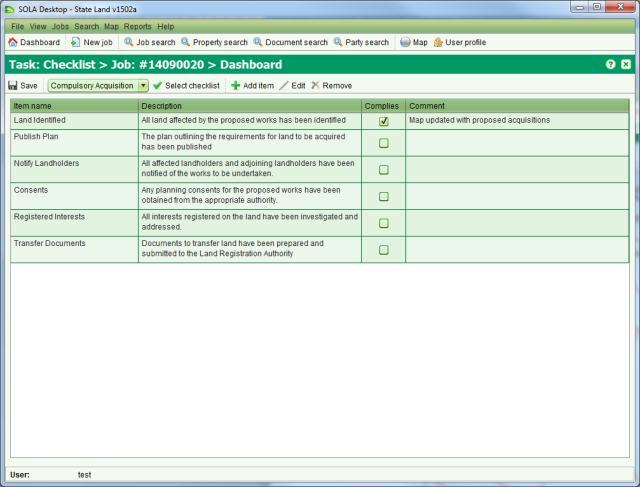
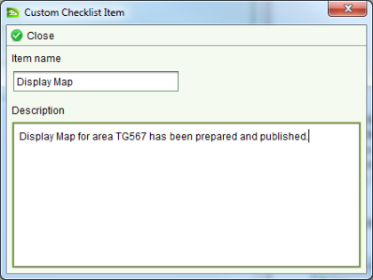

The Checklist screen allows you to confirm that specific actions required for the job have
been completed as well as provide additional comments if appropriate. To access the Checklist
screen you must  Start a Checklist task from the Tasks tab of the Job Details screen.
Start a Checklist task from the Tasks tab of the Job Details screen.

Checklist
SOLA State Land can be pre-configured with checklists relevant to the types of jobs the State Land Agency is likely to undertake. Checklists can be used to indicate compliance and/or completion of activities related to the job that cannot be otherwise managed within SOLA State Land such as manual inspection of property or compliance to specific legal or state processes.
To select a pre-configured checklist, choose the appropriate list form the dropdown and
click  Select
checklist. You can indicate that an item has been complied with by ticking the Complies
checkbox. SOLA State Land will not force you to comply with all items, but you should enter a
suitable comment if you choose not to comply with any item.
Select
checklist. You can indicate that an item has been complied with by ticking the Complies
checkbox. SOLA State Land will not force you to comply with all items, but you should enter a
suitable comment if you choose not to comply with any item.
For a specific job, you can also add custom checklist items using  Add item. This will open the Custom Checklist screen.
Add item. This will open the Custom Checklist screen.

Custom Checklist screen
Enter an item name and description for the checklist item then click  Close. The new item will be added to the
checklist and you will be able to indicate compliance with the item as well as enter comments
against it. If you need to modify the custom checklist item, select it and use
Close. The new item will be added to the
checklist and you will be able to indicate compliance with the item as well as enter comments
against it. If you need to modify the custom checklist item, select it and use  Edit or
Edit or  Remove.
Remove.